Important Contacts
We are here to assist you during your stay.
Victor Wilson G. Azevedo
Main HostPortuguês, Español, English
Blandina Azevedo
HostessPortuguês
Emergency Number: 112
For Police, Ambulance, or Fire Department throughout Portugal.
Directions & Parking
Step-by-step guidance to reach Casa dos Azevedos smoothly.
Parking Notice
This property does not provide private parking. However, convenient public parking options and designated access routes are detailed below.
Click the boxes to view images of the route.
Light Blue Route
Follow the indicated route to reach the house entrance.
Dark Blue Route
Follow the dark blue route to reach the nearest public parking and the house entrance.
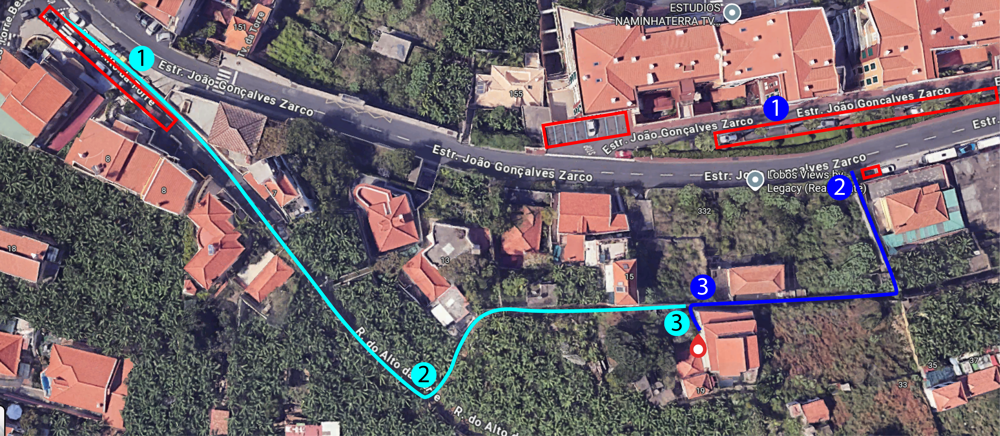
Important note about driving
On Rua do Alto da Torre, traffic is one-way. Although driving down certain blue route sections is legally possible, it is not recommended because the roads are very narrow. We advise parking in the designated car park and walking the short footpath.
Light Green Route
Follow the indicated route to reach the house entrance.
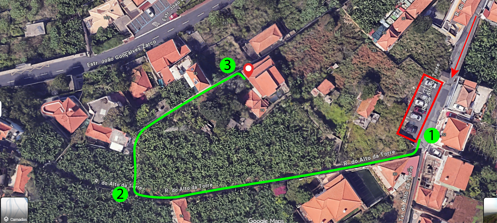
Check-in & Check-out Instructions
Self check-in procedure and smooth departure checklist.
Bed Linen & Towels Included
Bed sheets and towels are included in your stay.
Check-in Details
Schedule: From 16:00 (4:00 PM)
Smart keypad method
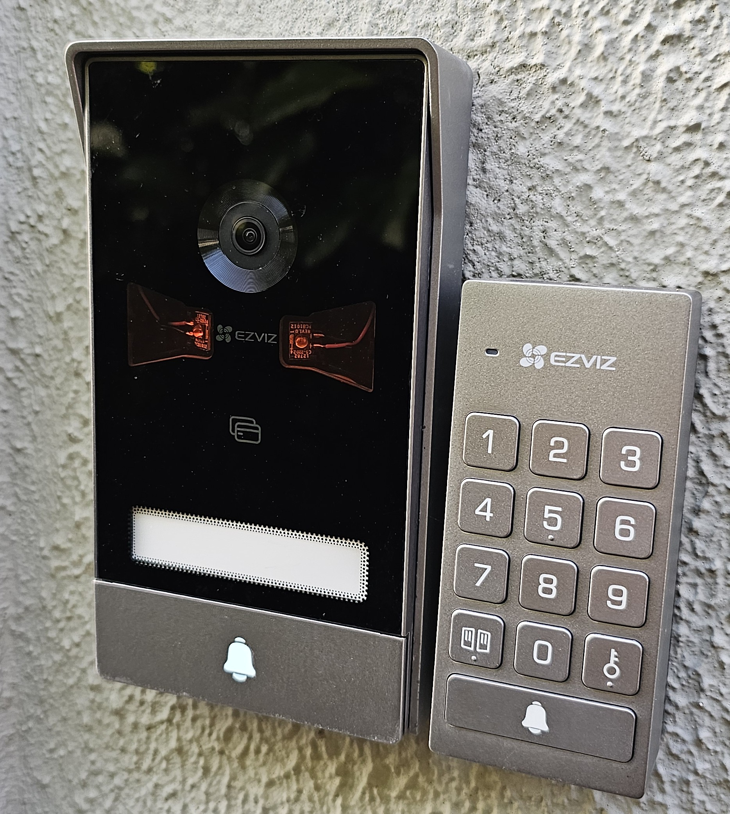
STEP-BY_STEP
- Walk towards the front of the house.
- Locate the illuminated digital keypad.
- Enter the 4-digit access code provided by the host.
- Press the KEY ICON button to unlock the door.
Check-out Details
Schedule: Until 12:00 PM (Noon)
Check-out Checklist:
We wish you a safe journey back home! Safe travels!
General House Rules
Please respect these guidelines to ensure a pleasant stay for everyone.
Quiet Hours
11:00 PM – 7:00 AM
Please minimize noise during nighttime hours and respect our neighbors.
No Smoking inside
Cigarettes, E-cigs, Vapes
Smoking is strictly prohibited indoors. Allowed only outdoors on the access path.
No Parties
Strict policy
Parties are not allowed on the property to ensure a peaceful environment for all neighbors and guests.
Visitors policy
Inform the Host of any unregistered visitors
Overnight guests are not permitted without prior host consent (fees may apply).
No Pets Allowed
Property is pet-free
Pets are not allowed in the property to maintain hygiene standards.
Children Policy
Children under 12 years old
Children under 12 years old are not allowed without adult supervision. Cot is available on request.
Equipments & Operation
Quick guide to operating home appliances easily.
Smart TV
Living Room- Press the Power button to turn on the TV.
- Smart TV supports apps like Netflix (use your personal account).
- Important: Please log out of personal streaming accounts before departure.
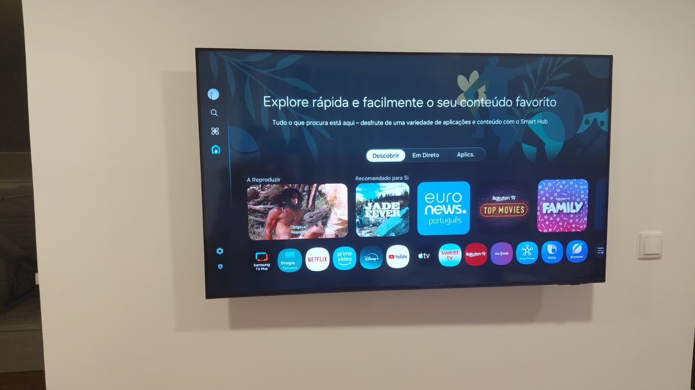
Induction Hob
Kitchen- Press the power button (leftmost) to turn on.
- Select desired cooking zone on screen.
- Adjust heat intensity using “+” and “-” symbols.
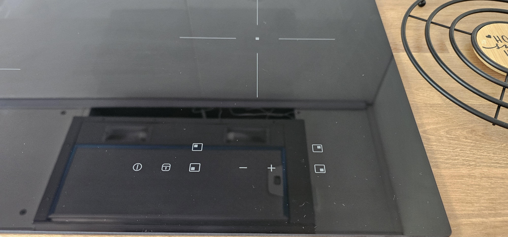
Microwave Oven
Kitchen- Open door using the large bottom button.
- Set heating time by pressing the clock icon followed by Start.
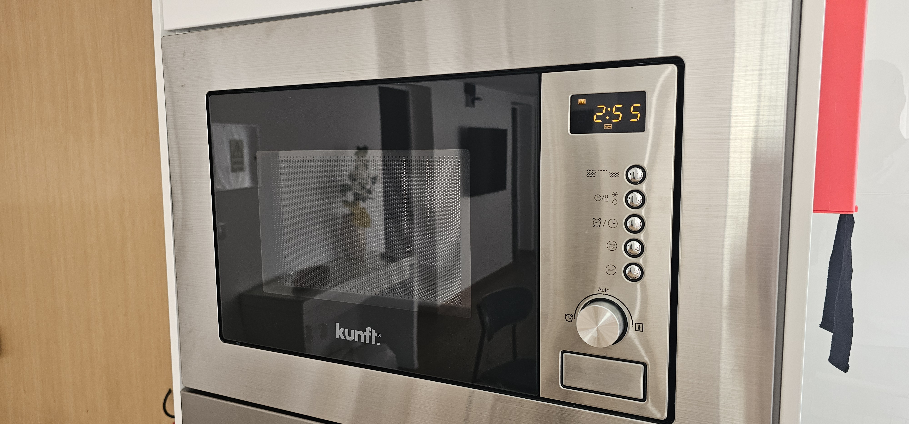
Electric Oven
Kitchen- Left Dial: Cooking mode / function.
- Center Dial: Timer alert.
- Right Dial: Temperature adjustment (°C).
- Note: The timer emits a sound but does not turn off the oven automatically.
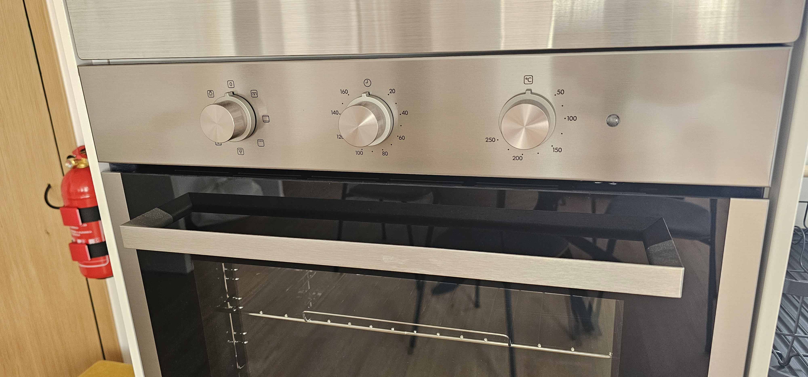
Washing Machine
Laundry Room- Load laundry into the drum and close the door.
- Add detergent to the left drawer compartment.
- Select program dial & press Start.
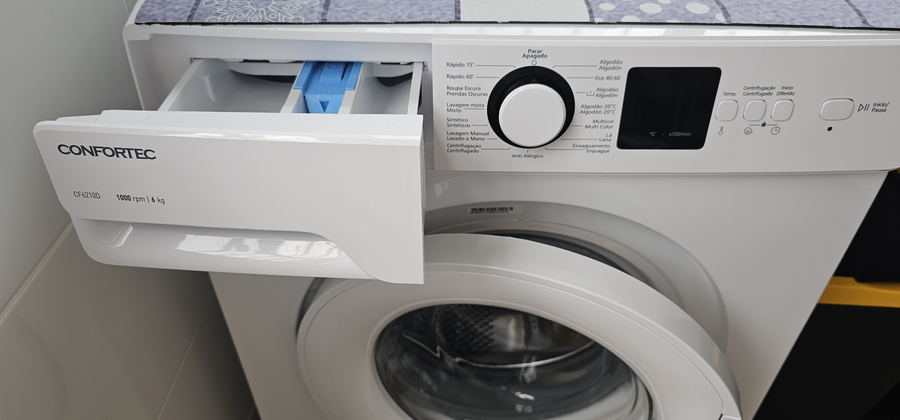
Doorbell Monitor & Lock
Entrance / Electrical Panel- Located near the main electrical panel.
- Press the top right orange button to view outdoor camera.
- Tap screen key icon () to unlock door remotely.
- Manual unlock button is located in the center of the door lock.
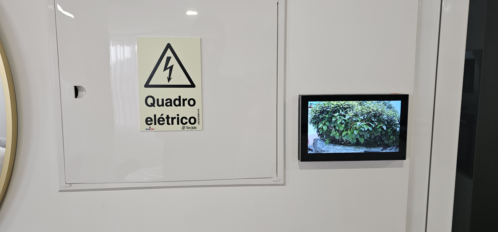
Coffee Machine
Kitchen- Turn on the machine by holding down the two top buttons for a few seconds. Lights will blink while the machine heats up.
- Add water to the reservoir.
- Load a coffee capsule by lifting the lever and inserting the capsule in the same orientation indicated by the shape on top.
- Select the small cup for a short espresso or the large cup for a slightly longer espresso.
- Enjoy your coffee!
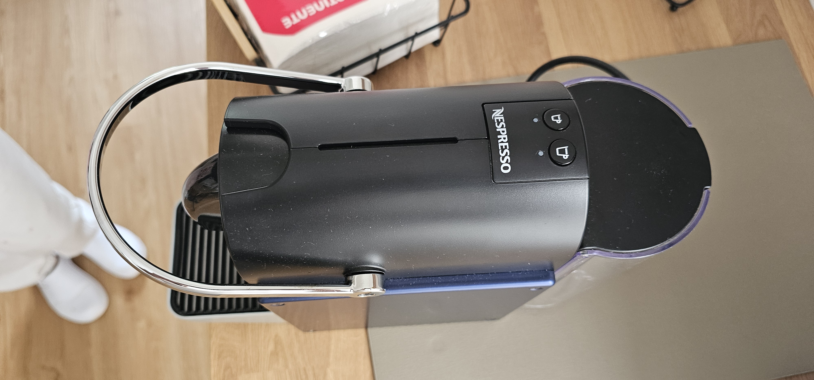
Safety, Emergencies & Eco Practices
Important safety locations and our sustainability tips.
Tap Water is Safe to Drink
You can drink the tap water at the property. It is safe and helps us reduce plastic waste.
Fire extinguisher
The fire extinguisher is located behind the entrance door.
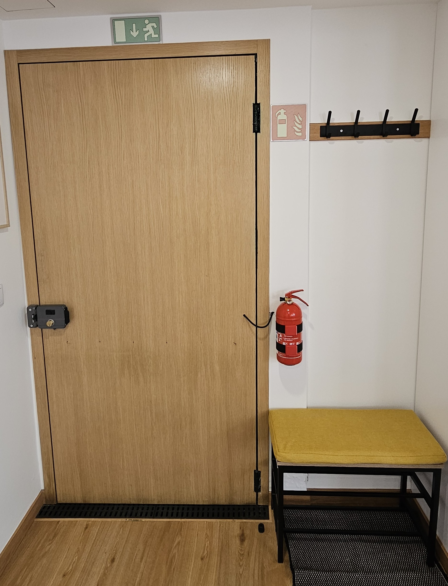
First Aid kit
Located in the cabinet next to the living room sofa.
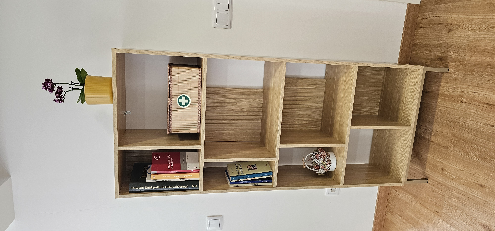
Eletrical panel
Labeled electrical panel right after the entrance door.

Eco-friendly Practices
Madeira Island is a natural paradise. Help us protect our environment by following these simple tips:
In the following image you can find the location of the recycling bins for large trash disposal.
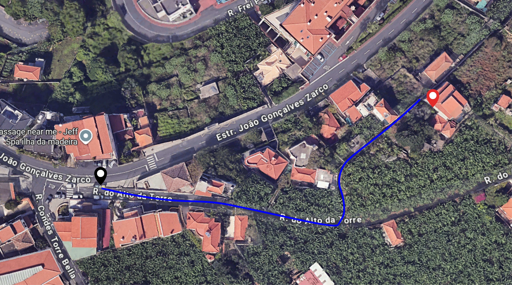
Explore Madeira & Local Area
Handpicked beaches, viewpoints, restaurants, and day trips.
Official Madeira Tourism Guide
Discover official trails, levadas, and island events.
WALKME - The n.1 hiking guide from Madeira
Find the next trails, get real-time alerts, offline access and stay safe.
Use the promo code: WALKMEAL30 and get a discount!
Recommended Beaches
Praia do Vigário
Câmara de Lobos • Pebble beach
Fajã do Cabo Girão
Cable car required • Quiet location
Fajã dos Padres + Restaurant
Access via cable car • Advance booking recommended
Praia Formosa
Funchal • Black sand & pebble beach
Complexo Balnear do Lido
Funchal • Natural pools & amenities
Praia da Calheta
Golden sand beaches
Praia de Machico
Golden sand beaches
Scenic Viewpoints
Gastronomy & Local "Espetada" Restaurants
Santa Cecília
Great nearby spot for breakfast & pastries.
Deserta Pequena
Good fine restaurant for seafood and fish.
Vila do Peixe
Fresh seafood in Câmara de Lobos harbor.
O Pasto
Known by its brazilian barbecue, several meat options.
Adega do Teixeira
Traditional restaurant with typical Madeiran dishes.